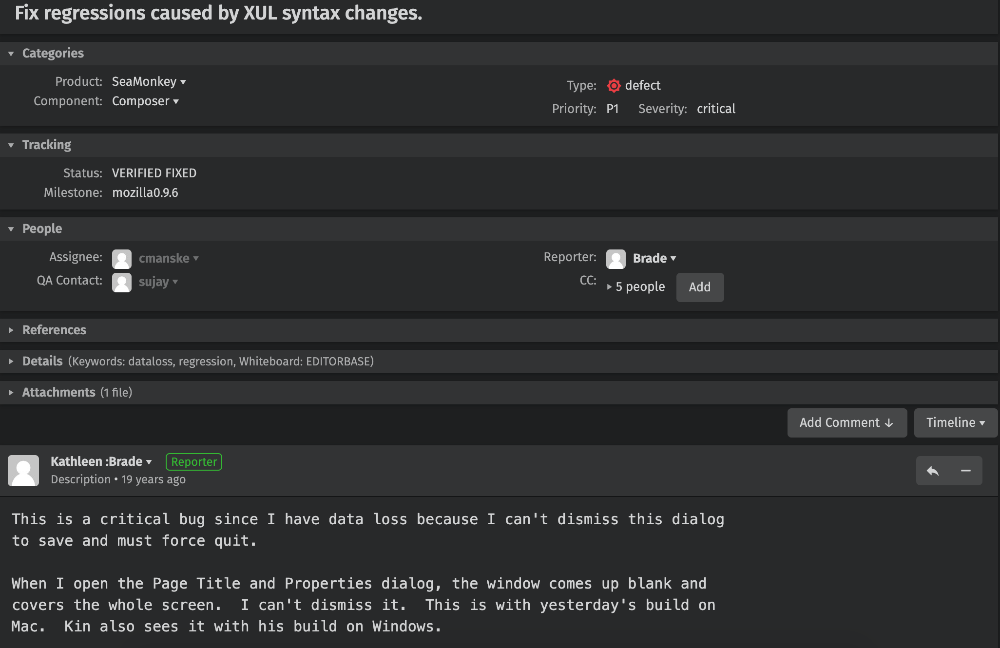

{% extends 'base.html' %}
{% block mainbody %}
    <head>
        <meta http-equiv="Content-Type" content="text/html; charset=utf-8"/>
        <title></title>
        <meta charset="utf-8"/>
        <script src="../static/js/echarts.js"></script>
        <script src="../static/js/jquery-1.8.3.min.js"></script>
    </head>
    <div class="col-md-12">
        <div class="panel panel-default ">
            <header class="panel-heading">
                缺陷报告
            </header>
            <div class="panel-body ">
                
            </div>
        </div>
    </div>
    <div class="col-md-12">
        <div class="panel panel-default ">
            <header class="panel-heading">
                BugKG关系图
            </header>
            <div class="panel-body ">
                <div id="graph" style="width: 90%;height:600px;"></div>
            </div>
        </div>
    </div>
    <script src="/static/js/jquery.min.js"></script>
    <script type="text/javascript">
        // 将后端的查询结果使用echarts展示
        var ret_dict = {
            'flag': 0,
            'relations': [['Describe', 'open'], ['Describe', 'list properties dialog'], ['Describe', 'crash'], ['Describe', 'browser'], ['Describe', 'right click'], ['Describe', 'edit page'], ['Describe', 'composer'], ['Describe', 'place'], ['Describe', 'cursor'], ['Describe', 'list'], ['Describe', 'select'], ['Describe', 'list properties'], ['Describe', 'edit'], ['Describe', 'immediate']],
            'source': '108746'
        };
        console.log('ret_dict', ret_dict);
        var data = [];
        var links = [];

        //构造数据
        var node1;
        if (!isNaN(ret_dict['source'])) { // 缺陷类
            node1 = {
                name: ret_dict['source'],
                category: 0,
                symbolSize: 50,
            };
        } else { // 文本类
            node1 = {
                name: ret_dict['source'],
                category: 1,
                symbolSize: 50,
            };
        }
        data.push(node1);

        for (var i = 0; i < ret_dict['relations'].length; i++) {
            var node2;
            if (!isNaN(ret_dict['relations'][i][1])) { // 缺陷类
                node2 = {
                    name: ret_dict['relations'][i][1],
                    category: 0,
                    symbolSize: 20,
                };
            } else { // 文本类
                node2 = {
                    name: ret_dict['relations'][i][1],
                    category: 1,
                    symbolSize: 20,
                };
            }
            data.push(node2);

            var link = {
                source: ret_dict['source'],
                target: ret_dict['relations'][i][1],
                name: ret_dict['relations'][i][0],
                des: ret_dict['relations'][i][0]
            };
            links.push(link);

        }
        console.log(links);
        var myChart = echarts.init(document.getElementById('graph'));
        var categories = [{
            name: 'Bug'
        }, {
            name: 'Text'
        }];

        option = {
            // 图的标题
            title: {
                text: 'BugKG 关系图'
            },
            // 提示框的配置
            tooltip: {
                formatter: function (x) {
                    return x.data.des;
                }
            },
            // 工具箱
            toolbox: {
                // 显示工具箱
                show: true,
                feature: {
                    mark: {
                        show: true
                    },
                    // 还原
                    restore: {
                        show: true
                    },
                    // 保存为图片
                    saveAsImage: {
                        show: true
                    }
                }
            },
            legend: [{
                // selectedMode: 'single',
                data: categories.map(function (a) {
                    return a.name;
                })
            }],
            series: [{
                type: 'graph', // 类型:关系图
                layout: 'force', //图的布局，类型为力导图
                symbolSize: 10, // 调整节点的大小
                roam: false, // 是否开启鼠标缩放和平移漫游。默认不开启。如果只想要开启缩放或者平移,可以设置成 'scale' 或者 'move'。设置成 true 为都开启
                edgeSymbol: ['circle', 'arrow'],
                edgeSymbolSize: [2, 10],
                edgeLabel: {
                    normal: {
                        textStyle: {
                            fontSize: 20
                        }
                    }
                },
                force: {
                    repulsion: 1500,
                    edgeLength: [10, 30]
                },
                draggable: true,
                lineStyle: {
                    normal: {
                        width: 2,
                        color: '#4b565b',
                    }
                },
                edgeLabel: {
                    normal: {
                        show: true,
                        formatter: function (x) {
                            return x.data.name;
                        }
                    }
                },
                label: {
                    normal: {
                        show: true,
                        textStyle: {}
                    }
                },

                // 数据
                data: data,
                links: links,
                categories: categories,
            }]
        };
        myChart.setOption(option);
    </script>
{% endblock %}